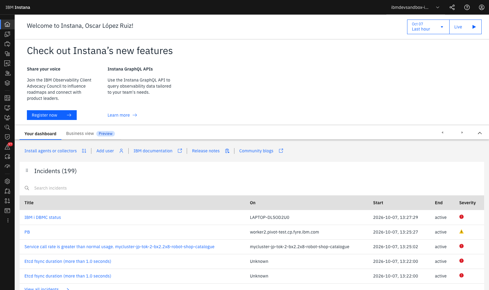
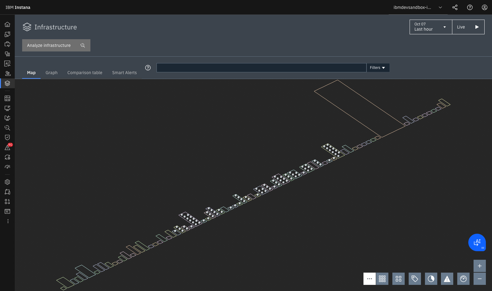

Lab 0 — Entorno, Consola y Dynamic Focus¶
LAB 0⏱ 15 minutos
1. Fundamentos Teóricos de la Observabilidad Moderna¶
La transición desde aplicaciones monolíticas hacia arquitecturas de microservicios distribuidos, contenedores efímeros y nubes híbridas ha transformado radicalmente la monitorización. En un entorno dinámico, los tres pilares clásicos de la observabilidad (Métricas, Logs y Trazas) resultan insuficientes si se analizan en silos desconectados.
IBM Instana introduce un paradigma centrado en la Observabilidad Continua y Automatizada, articulado en cuatro capacidades esenciales:
- Auto-Discovery Continuo: Descubrimiento pasivo y activo de componentes físicos, lógicos y de red sin intervención humana.
- Dynamic Graph: Un grafo temporal en memoria que mantiene actualizadas las dependencias vivas entre infraestructura y código.
- Métricas de Alta Fidelidad (Resolución de 1 segundo): Captura instantánea de micro-ráfagas (micro-bursts) de CPU o memoria que los sistemas basados en promedios de 1 a 5 minutos ocultan.
- 100% Tracing No-Sampling: Cada transacción individual es registrada y contextualizada para auditoría y diagnóstico sin pérdida de información.
En este laboratorio inicial te familiarizarás con el entorno de trabajo (IBM Dev Sandbox), aprenderás a orientarte dentro de la interfaz gráfica, dominarás el control temporal y utilizarás el motor de búsqueda universal Dynamic Focus.
2. Acceso a la Consola de Instana Dev Sandbox¶
- Abre tu navegador web e ingresa en: https://ibmdevsandbox-instanaibm.instana.io/#/home
- Inicia sesión a través del portal de identidad corporativo (SSO).
- Tras la autenticación, accederás al panel de bienvenida (Home Overview):

En esta pantalla inicial observarás:
- Banner de Novedades y Comunidad: Enlaces a las APIs de GraphQL, documentación oficial y release notes.
- Incidentes Activos (Incidents Summary): Resumen en tiempo real de anomalías correlacionadas en los clústeres del entorno (por ejemplo, alertas sobre llamadas a catálogos o estados de bases de datos).
- Acceso a Instalación de Agentes: El botón
Install agents or collectorsproporciona los comandos listos para desplegar agentes en Linux, Windows, macOS, Kubernetes, OpenShift o nubes públicas (AWS, Azure, GCP, IBM Cloud).
3. Módulos y Arquitectura de la Barra Lateral¶
La consola de Instana organiza sus capacidades en una barra lateral izquierda de alto contraste:
| Icono / Módulo | Propósito y Capacidades Principales |
|---|---|
| 🏠 Home | Resumen ejecutivo, incidentes abiertos en tiempo real y accesos rápidos a documentación y APIs GraphQL. |
| 🌐 Websites & mobile apps | Real User Monitoring (RUM). Monitoriza la experiencia de usuario final en navegadores web y apps móviles (iOS/Android), midiendo Core Web Vitals (LCP, FID, CLS), tiempos de renderizado y errores JavaScript. |
| 💼 Business processes | Monitorización orientada a procesos de negocio (ej. Checkout to Delivery, Loan Application Approval) correlacionando múltiples servicios técnicos con KPIs de negocio. |
| 📱 Applications | Application Perspectives. Agrupación lógica de servicios, APIs y microservicios con sus métricas RED (Rate, Errors, Duration) y mapas de dependencias. |
| 🤖 Gen AI observability | Telemetría especializada para inferencias de Large Language Models (LLMs), agentes watsonx, consumo de tokens, latencias de embedding y costos operativos. |
| ☁️ Platforms | Monitorización nativa de plataformas de orquestación como Kubernetes, Red Hat OpenShift, Cloud Foundry, VMware vSphere y Serverless (AWS Lambda). |
| 🗄️ Infrastructure | Infrastructure Map 3D. Mapa físico y virtual de hosts, máquinas virtuales, procesos middleware (JVMs, Node.js, Go, Python) y bases de datos. |
| 📊 Custom dashboards | Creación y consumo de cuadros de mando personalizados con widgets interactivos multidimensionales. |
| 📋 Logs | Búsqueda y correlación contextual de registros de logs enlazados directamente con las trazas y los contenedores que los emitieron (Logs in Context). |
| ⏱️ Synthetic monitoring | Ejecución periódica de pruebas sintéticas (HTTP checks, scripts de navegación de usuario) desde múltiples puntos de presencia globales para validar SLAs. |
| 🔍 Analytics | Unbounded Analytics. Motor analítico que permite consultar, filtrar y agrupar miles de millones de trazas, llamadas y métricas de infraestructura sin límites de cardinalidad. |
| 🛡️ Vulnerabilities | Análisis estático y dinámico de vulnerabilidades CVE en librerías cargadas en memoria por los runtimes monitorizados. |
| ⚠️ Events | Registro consolidado de anomalías, advertencias, eventos de cambio (despliegues de Git, reinicios) e Incidentes agrupados por IA. |
4. El Selector de Ventana Temporal (Time Picker)¶
En la esquina superior derecha se encuentra el control de tiempo, una herramienta clave para el análisis forense:
┌─────────────────────────────────┐ ┌──────────┐
│ Oct 07 - Last hour ▼ │ │ Live ▶ │
└─────────────────────────────────┘ └──────────┘
Modos de Operación Temporal:¶
- Live Mode (Tiempo Real):
- Cuando el botón
Live ▶está activo, la interfaz actualiza los gráficos automáticamente cada 1-5 segundos. - Es ideal para salas de operaciones (NOC/SRE) y monitorización durante despliegues en producción o pruebas de estrés.
- Preset Ranges (Ventanas predefinidas):
Last 10 minutes,Last hour,Last 24 hours,Last 7 days,Last 30 days.- Time Shift & Compare:
- Permite superponer la curva de rendimiento actual con la de la misma hora del día anterior o de la semana pasada para identificar desvíos de estacionalidad.
- Custom Window (Ventana absoluta):
- Permite fijar un intervalo específico (ej.
2026-10-07 13:15:00a2026-10-07 13:30:00) para analizar un incidente pasado sin que el paso del tiempo altere los datos en pantalla.
5. Dominando la Dynamic Focus Bar (Consultas Lucene)¶
La Dynamic Focus Bar situada en la cabecera superior permite transformar toda la interfaz de Instana aplicando filtros transversales que afectan instantáneamente a la infraestructura, los servicios, las trazas y las alertas.

Tabla de Sintaxis y Operadores:¶
| Operador / Sintaxis | Ejemplo de Uso | Descripción |
|---|---|---|
| Exact match | entity.type:jvm |
Filtra solo procesos de Java Virtual Machine. |
Wildcard (*) |
container.name:*catalogue* |
Coincidencia parcial con cualquier contenedor que contenga "catalogue". |
| Operador AND | entity.zone:production AND entity.type:host |
Coincidencia simultánea de zona y tipo. |
| Operador OR | call.http.status:500 OR call.http.status:502 |
Coincidencia de cualquiera de los valores. |
| Operador NOT | entity.type:host AND NOT entity.zone:test |
Excluye entidades que cumplan la condición. |
| Comparación numérica | call.duration:>200ms |
Filtra llamadas con tiempo de respuesta superior a 200 ms. |
| Rango numérico | call.http.status:[500 TO 599] |
Rango inclusivo de códigos de error 5xx. |
Ejercicios Prácticos con Dynamic Focus:¶
Ejercicio 1: Filtrar por tecnología de base de datos
En la Dynamic Focus Bar, escribe la siguiente consulta y presiona Enter:
Observa cómo la interfaz resalta exclusivamente las instancias de MongoDB activas en el entorno.Ejercicio 2: Filtrar contenedores de la aplicación de pedidos
Limpia el filtro anterior y escribe:
Esto aislará los contenedores de catálogo y carrito de compras en toda la topología.Ejercicio 3: Aislar llamadas con error HTTP de servidor
Escribe:
Toda la telemetría se enfocará únicamente en las transacciones que han producido errores críticos 5xx.6. API de Automatización: GraphQL y REST API¶
Instana está diseñado con una arquitectura API-First. Cualquier dato visible en la interfaz gráfica puede consultarse y automatizarse mediante sus APIs públicas:
Consulta de Topología con GraphQL API¶
Instana expone un endpoint GraphQL en https://<instana-unit>/graphql que permite consultar el Dynamic Graph:
query GetUnhealthyServices {
application(id: "keda-scaler-robotapp") {
name
services {
name
health {
status
unresolvedIssuesCount
}
metrics {
calls(window: "last-hour")
erroneousCallRate(window: "last-hour")
latency(window: "last-hour", aggregation: P95)
}
}
}
}
7. Resumen y Checklist del Lab 0¶
Al finalizar este laboratorio, has adquirido las competencias para:
 Iniciar sesión y autenticarte en el Sandbox de IBM Instana.
Iniciar sesión y autenticarte en el Sandbox de IBM Instana.- Comprender el propósito de cada módulo en la barra de navegación lateral.
- Dominar el Time Picker, alternando entre el modo Live y ventanas históricas de análisis.
- Construir consultas complejas con la sintaxis de Dynamic Focus para filtrar el contexto de observabilidad.
- Conocer las capacidades de automatización vía API REST y GraphQL.